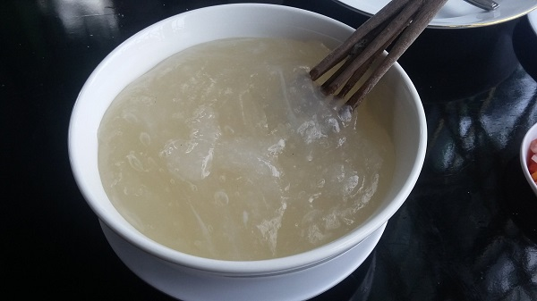
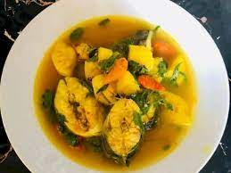
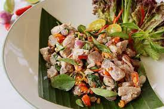
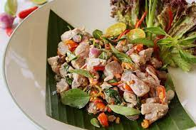
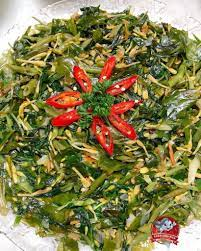
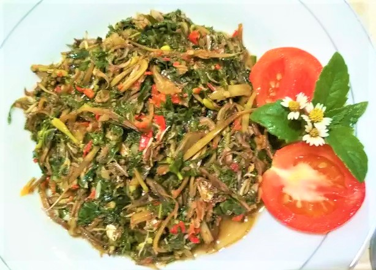

Makanan Khas Maluku Utara
ditulis oleh Mawardani Salahudin. pada 14 November 2023.
1. Papeda
Makanan khas Maluku Utara yang pertama adalah pupeda (sama seperti papeda yang merupakan makanan khas Papua). Makanan bertekstur kental dan lengket ini menjadi makanan pokok warga setempat. Pupeda berbahan dasar tepung sagu ini sangat pas dipadukan dengan kuah mubara, dengan lauk ikan tongkol.
Salah satu yang menarik dari makanan ini ialah cara menyantapnya. Sebab, Anda bakal membutuhkan bantuan alat seperti sumpit. Anda bisa menggulung papeda dengan sumpit kemudian menyeruput kuah. Rasanya legit, gurih berpadu dengan kuah mubara dan ikan tongkol yang nikmat.
2. Ikan Kuah Kuning

Ikan kuah kuning adalah salah satu makanan khas dari Maluku Utara yang sangat disukai oleh banyak orang. Sesuai namanya "kuah kuning", kuliner ini memiliki warna kuning yang menggoda selera. Warna ini dihasilkan dari bumbu kunyit. Selain itu, penambahan bumbu rempah yang banyak membuat rasanya semakin kaya.
Satu hal yang membuat kuliner ini istimewa yaitu penggunaan bumbu yang dapat menghilangkan bau amis ikan. Yaitu penggunaan daun kemangi dan jeruk nipis. Biasanya ikan yang digunakan adalah ikan Julung atau ikan Tongkol dengan kuahnya yang dibuat tidak terlalu kental. Ikan kuah kuning sangat cocok disajikan dengan papeda. Papeda yang berasa tawar dipadu dengan ikan kuah kuning yang gurih sangat pas.
3. Gohu Ikan
 

Gohu ikan adalah salah satu makanan khas yang paling terkenal. Makanan ini terbuat dari ikan segar yang diolah dengan bumbu-bumbu khas Maluku, seperti cabai rawit, bawang merah, bawang putih, tomat, dan jeruk nipis.
Makanan ini memiliki rasa yang pedas dan asam yang menyegarkan. Gohu ikan biasanya disajikan dengan nasi, pupeda atau dengan singkong rebus. Makanan ini juga sering disajikan sebagai lauk pauk untuk acara-acara khusus.
4. Sayur Garu
 Sayur Garu adalah kumpulan dari beberapa sayuran seperti daun pepaya, daun singkong dan yang khas adalah jantung pisang. Sayur campur semacam ini sebenarnya bisa ditemukan di berbagai daerah, khususnya Indonesia Timur, sampai Sulawesi Utara dan tenggara. Tapi, dengan racikan bumbu dan juga kombinasi yang sedikit dimodifikasi.
Sayur Garu di Ternate ditumis dengan bawang dan beberapa racikan bumbu rempah khas Ternate, yang jika dimakan tanpa lauk ikan atau daging pun, akan tetap terasa nikmat sebagai pendamping nasi panas maupun singkong rebus.
5. Lapis Tidore

Kue lapis Tidore ini termasuk kue tradisional Maluku Utara yang biasanya mudah ditemukan saat momen bulan puasa. Saat itulah kue lapis Tidore banyak dijajakan di sejumlah sudut kota dengan harga terjangkau setiap bungkusnya. Berbeda dengan kue lapis Jawa yang warna-warni, lapis Tidore dibuat tumpuk tiga dengan lapisan gula merah dan kenari. Kue ini memiliki tekstur yang lembut dan rasa yang manis, sangat cocok untuk teman nge-teh atau ngopi.
Makanan ini biasanya disajikan dalam berbagai warna, seperti hijau, kuning, dan merah. Lapis Tidore biasanya disajikan sebagai camilan atau kudapan. Makanan ini juga sering disajikan sebagai hidangan penutup.